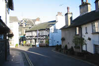
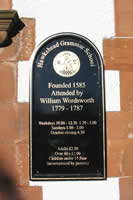
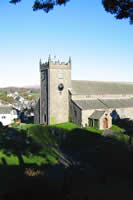
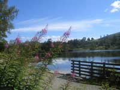
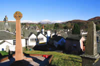

Hawkshead Tourist Information

{kind=link}
The Beatrix Potter Gallery was once the office of her husband and solicitor, William Heelis. Inside, the original water-colours, illustrations, and various other items relating to her life and times are on display.

{kind=link}

{kind=link}
The 9000 acres of the Grizedale Forest's nature trails, wood sculptures and picnic areas are close-by. The present day picnic and car-park position is the site of the former World War 2 prisoner-of-war camp for German officers. It was from here that "the one that got away" escaped, an event later made into a film of the same name.

{kind=link}
Hawkshead really is a delight. Everything about it conveys a calm untroubled air well suited to the visitor wishing to soak up the atmosphere of days gone-by.

{kind=link}
How to get there:
By rail: From the West Coast Main Line, change at Carnforth or Oxenholme for Windermere.
From Windermere, take one of the many buses or taxis.
By road: The village is reached from J36 of the M6 along the A590/A591 to Ambleside, and then the B5285.
Or from J36 to Bowness on the A590/591, and from there take the cross lake ferry to Sawrey and on to Hawkshead.
Attractions in Hawkshead |
Beatrix Potter Gallery
Hawkshead is proud of its association with Beatrix Potter and the carefully preserved office in the 17th C. Gallery building from where her solicitor husband, William Heelis conducted his business, is testimony to this. Everything is maintained as closely as possible to the original layout and in other rooms are displays of sketches and watercolours by Beatrix Potter herself. The gallery is located in the village centre with parking and toilets 200 yards away in a pay and display vehicle park. For convenience of parents with young children, hip carrying infant seats are on loan.
www.nationaltrust.org.uk/main/w-beatrixpottergallery
Hill Top. Near Sawrey
Bequeathed to the National Trust and set in the peaceful hamlet of Near Sawrey, Hill Top is the refuge sought by Beatrix Potter to sit, paint, sketch and write the majority of her stories for children. Hill Top often featured as a background illustration on the cover of her books. Such was her love of the house, she stipulated that after her death it should never be lived in again, and that all furnishings to remain exactly as before. Hill Top has always been a top visitor attraction but since the film “Miss Potter”, entrance tickets to the house are frequently sold out by early afternoon. A timed entry system has been introduced to avoid overcrowding which could result in damage to house contents. Queues for entry can last two hours but access to the garden and shop is always possible. The ticket office is located in the car park.
E-mail hilltop@nationaltrust.org.uk
The Old Hawkshead Grammar School
The former school building is presently operated by the governors of the school as a museum. The school began life in 1585. It is said to have been a demanding regime teaching grammar (Latin) arithmetic, geometry and ancient history amongst other subjects with learning and discipline supported by the birch. It has seen a number of headmasters in its long history one of whom was the brother of Fletcher Christian, famous for his part in the Bounty Mutiny. The museum contains a wide assortment of objects associated with the old school one of which is a carving of his name made by William Wordsworth in the top of his desk. This practice apparently, was encouraged by the teachers. Group tours on request to the governors or contact Hawkshead Tourist Information Centre for details.
Saint Michaels Church
"I saw the snow white church upon the hill" wrote William Wordsworth on his return to Hawkshead following his initial year at university. The 15th C. Saint Michaels Church, founded in Norman times, was formerly painted white but changed to the present exterior in the earlier of two programmes of restoration. Clear evidence of its long history remains in several forms including the circa 1578 north aisle window. The picturesque location and commanding views do much to create feeling and mood during performances of “Music for a Summers Evening” occurring regularly in the summer months.
Grizedale Forest
Hawkshead stands on the fringes of probably the most walked woodland tracks and trails in Britain. It is quite literally a forest of delights and surprises along paths and cycle tracks which can suddenly reveal wood sculptures, streams, wildlife, picnic areas and, solitude. For the venturesome, the “Go Ape” tree top adventure is regarded as an essential ingredient of a visit to Grizedale Forest. Other amenities include cycle hire, café and gift shop, and expert advice and information on things to see and do. The Visitor Centre and a new development a couple of hundred yards beyond provides ample parking and toilet facilities.
Tarn Hows
The tarn is a very popular attraction close to Hawkshead and is said to be the most photographed area of water in England although the river and the bridge of Ashness near Watendlath must be a close second if not equal. The grassy slopes above the tarn provide a comfortable grandstand on which to enjoy a picnic and take in the beauty of the near and distant scenery. The level track around the water is comfortably wheelchair and pushchair accessed, and, for the walker only, there are paths beyond, descending beside tumbling streams through wooded areas or climbing to higher ground and the rewards of the superb panoramas that is the Lake District.
Tarn Hows information
Esthwaite Water
The 280 acres of Esthwaite Water is a firm favourite with anglers who fish the well stocked waters for pike and trout. It is close to Hawkshead and its shores support a variety of wild life and include secluded sections of peace and quiet to sit and reflect or to take a gentle level walk. It was certainly a favourite spot of William Wordsworth and moved him to write of it in his poems. There are facilities for boat and / or rod hire, a children’s fishing area and a café serving hot and cold meals. A short walk from the village but car parking close to the waters edge is available. Disabled access.
Belham Tarn
The tarn is about four miles from Hawkshead. Its 25 acres have been designated as an area of special scientific interest and supports extensive reed beds, brown trout, roach, perch and eel.
Windermere Cross Ferry Service
The ferry is an ideal way to reduce the journey time between Hawkshead and Bowness for car, bicycle and foot passengers. The five minute crossing lands at Ferry Nab, close to parking facilities, Bowness promenade, a selection of lake cruises, boat hire and the shops, cafes and restaurants close to the shoreline. Some queuing for the ferry at peak time but the time spent waiting is well compensated by lovely lake views.
Other Attractions and events
Go to our Events or Things to See and Do pages for details of attractions and events all easily reached from Hawkshead. The local summer shows are particularly entertaining and include the famous Cumberland and Westmorland Wrestling, fell racing, hound trailing, sheepdog trials, dog shows, ferret racing, locally brewed ales, homemade food from local produce and all the traditions of this proud region.
Food and Drink in Hawkshead |
Poppi Red
Main Street. Charming Coffee Shop serving delicious cakes, fresh sandwiches and a good selection of wines.
www.poppi-red.co.uk
Transportation in Hawkshead |